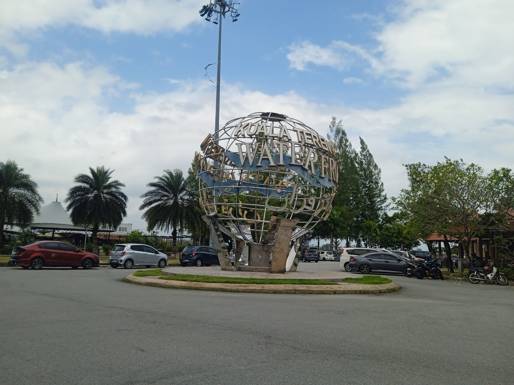
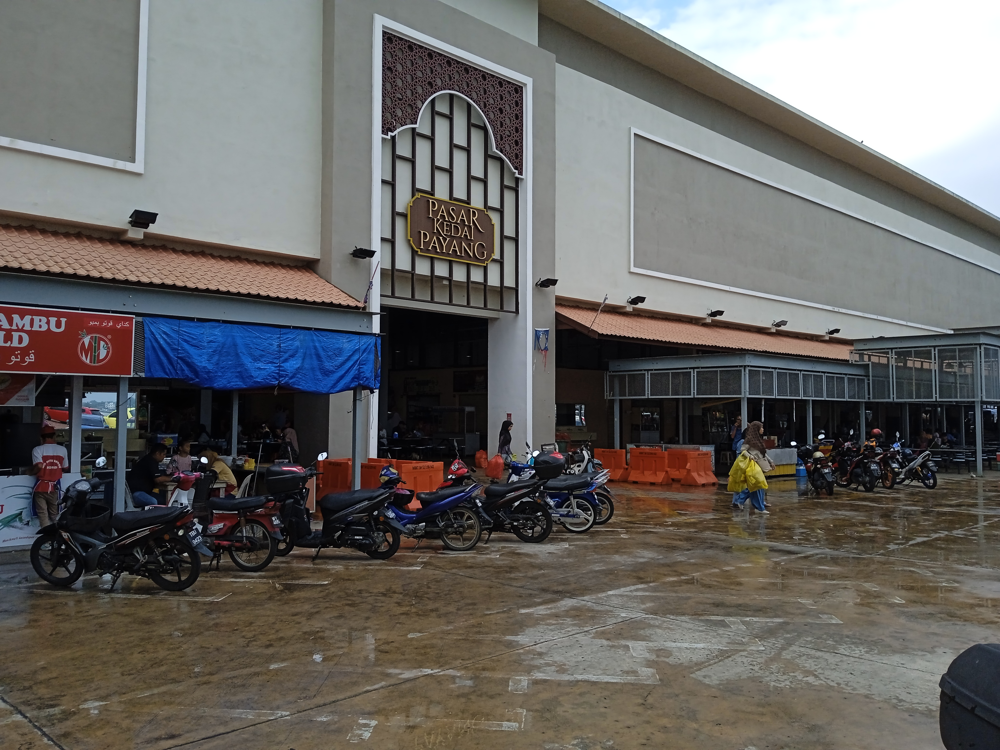

Heritage
Old streets with actual character
From Chinese shophouses to riverfront landmarks, the city feels lived-in, not staged. It is the kind of place where a slow walk becomes the point.
Kuala Terengganu is where mosque domes meet river light, where the food is loud in the best way, and where island escapes start with a short drive and a very good breakfast.




Kuala Terengganu is compact enough to explore without a fuss, but layered enough to keep surprising you. Heritage streets, serious food, and coastal escapes all live in the same orbit.
From Chinese shophouses to riverfront landmarks, the city feels lived-in, not staged. It is the kind of place where a slow walk becomes the point.
Crystal Mosque, Floating Mosque, and the city’s waterfront silhouette give Kuala Terengganu a visual identity that is calm, elegant, and quietly dramatic.
You do not need a complicated plan to chase the water here. Beaches, islands, and boat routes are all part of the day-trip menu.
If you only have one day, this is the cleanest route. No chaos. No overplanning. Just a sensible, beautifully paced day.
Nasi dagang, kuih, and kopi. Start with something local, then let the city wake up around you.
Walk the old quarters, pause by the waterfront, and let the architecture do the heavy lifting.
Pasar Payang is where shopping, snacking, and people-watching all become one very acceptable hobby.
Choose your mood: iconic dome reflections, or a horizon with a little more salt in the air.
If a city can be judged by what it serves at breakfast and supper, Kuala Terengganu passes with suspicious ease.
The non-negotiable. Fragrant rice, rich curry, and the sort of comfort food that has jurisdiction.
Best eaten fresh, hot, and without pretending you will stop at one portion. You will not.
Perfect for the “I just wanted one bite” phase, which never lasts very long.
The city is easy to enjoy when you keep the plan simple: light clothes, flexible timing, and a little respect for prayer times and local rhythm.
Most highlights are close enough to pair together. That means less time on logistics and more time on actual life.
East coast rain can be dramatic. Build a little buffer into your day and let the weather be the one improvising, not you.
The waterfront, mosques, and old streets all soften beautifully at sunset. If you take one photo slot, make it that one.